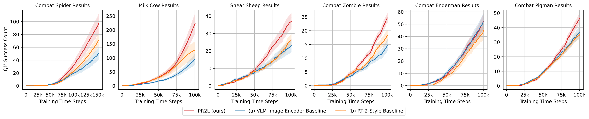
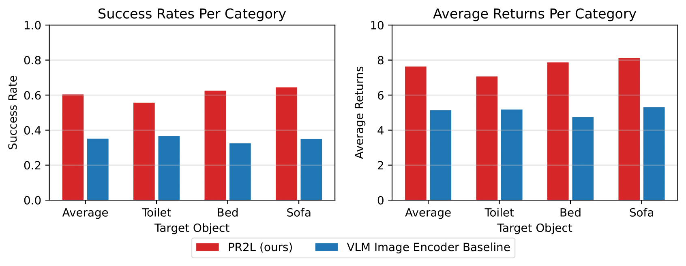
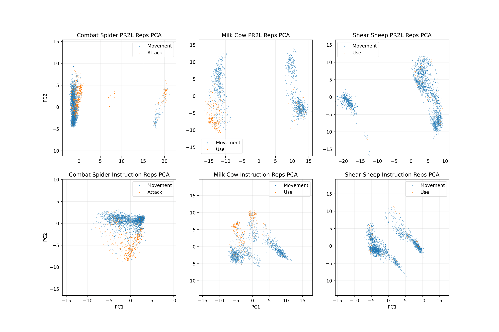
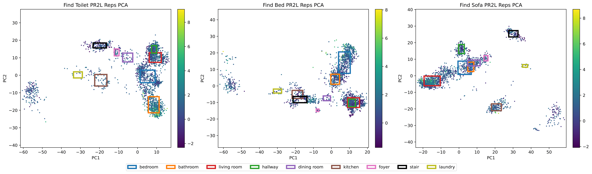
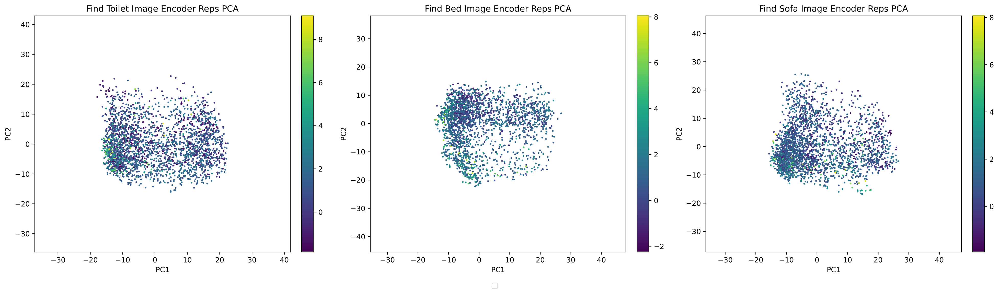

Humans can quickly learn new behaviors by leveraging background world knowledge. In contrast, agents trained with reinforcement learning (RL) typically learn behaviors from scratch. We thus propose a novel approach that uses the vast amounts of general and indexable world knowledge encoded in vision-language models (VLMs) pre-trained on Internet-scale data for embodied RL. We initialize policies with VLMs by using them as promptable representations: embeddings that are grounded in visual observations and encode semantic features based on the VLM's internal knowledge, as elicited through prompts that provide task context and auxiliary information. We evaluate our approach on visually-complex, long horizon RL tasks in Minecraft and robot navigation in Habitat. We find that our policies trained on embeddings extracted from general-purpose VLMs outperform equivalent policies trained on generic, non-promptable image embeddings. We also find our approach outperforms instruction-following methods and performs comparably to domain-specific embeddings.
We initialize policies for embodied control and decision-making tasks with a generative vision-language model (VLM) like InstructBLIP. For each visual observation from the considered task, we pass it into the VLM along with a task-relevant prompt, which encourages the VLM to attend to useful visual features in the image and produce representations that are conducive to learning to execute the task. After the VLM generates text to answer that prompt, the associated promptable representations are given to the policy, which is trained via standard RL algorithms.
Modern VLMs are generally trained to answer questions about images, but often do not know to to produce actions, especially the low-level control signals common to many embodied tasks. It is thus more appropriate to give them questions about the visual contents or semantics of observed images, rather than asking about what actions to take. Doing so produces representations that are grounded in the image, while also allowing for the user to specify specific useful features based on the VLM's semantic knowledge via prompting.
We first demonstrate PR2L in online RL experiments in Minecraft. In all cases, the task-relevant prompt asks the VLM to look for and attend to the presence of the task's target entity.
This results in more performant policies than (i) if generic, non-promptable representations are used and (ii) if RT-2-style instruction-following approaches are used.
PR2L does not inherently improve exploration, instead producing state representations that are semantically meaningful and task-relevant. We thus expect it to shine in offline learning settings, wherein exploration is not a problem. We thus explore its usage in offline RL experiments for semantic object navigation tasks in the Habitat simulator.
The prompt shapes the state representation to include the observed room's type, a useful abstraction for finding common household objects. We find that PR2L significantly outperforms the non-promptable baseline.
To get a sense of why PR2L works, we perform principal component analysis (PCA) of the promptable representations yielded by our VLM and plot each state's first two components. For the Minecraft tasks, we compare PR2L's representations and those yielded by the instruction-following baseline.
We observe the former yields a distinct bi-modal structure, wherein high-value functional actions (attacking or using items, large orange dots below) are clustered together in one mode (corresponding to the VLM saying that the target entity was detected).
We repeat this analysis for the offline Habitat experiments. This visualization is very interpretable, as each cluster corresponds to a different room classification yielded by the VLM. The state's color corresponds to its value under an expert policy (more yellow is higher value).
 As expected, high value states occur when the VLM's representation captures the room that a target object is expected to be found: toilets in bathrooms, beds in bedrooms, and sofas in living rooms. This structure is absent in the non-promptable image encoder's representations.
@inproceedings{Chen24-pr2l,
title={Vision-Language Models Provide Promptable Representations for Reinforcement Learning},
author={William Chen and Oier Mees and Aviral Kumar and Sergey Levine},
year={2024}
}